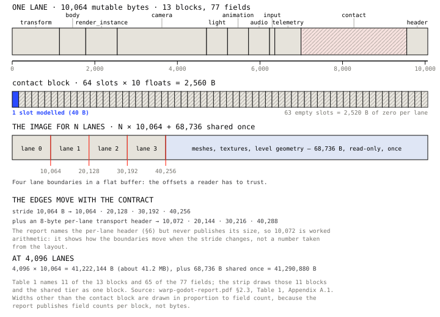

A GPU kernel is a flat function over arrays. A game engine is pointer-chasing over an object graph. Those two sentences are the whole problem, and most of what follows comes from taking them seriously instead of hoping a clever compiler makes them go away.
We want thousands of independent copies of a game running at once, so that testing, search and training stop being limited by how many engine instances you can afford. The obvious plan is to put the engine on the GPU. That plan doesn't work, and the reason it doesn't work tells you what to do instead.
What made Mario possible
We have run a whole commercial console game, Super Mario World, as GPU kernels. It works because of what the game is: a 65816 program, a single instruction stream over a flat address space. A recompiler lowers that stream to C, and a second backend lowers it to Warp. One GPU lane is one console. The state is a byte image with offsets known at compile time, and the ROM is shared read-only across every lane.
Notice what the Mario port did not do. It didn't recompile the picture processor. The SNES PPU has no instruction stream to recompile, so the port emulates it. Even in the friendliest possible case, part of the machine stayed outside the "compile it to the GPU" approach.
Why Godot is different
Godot offers no such target. Its runtime is a scene graph traversed by pointer, with dynamic dispatch, reference-counted resources, and a scripting virtual machine whose values are tagged unions. A kernel can't follow a pointer to an object whose type it learns at run time. There is no lowering from that runtime to a kernel that preserves its meaning.
This isn't a matter of effort. You could spend years on a Godot-to-GPU compiler and the object model would still be the thing it can't express.
Where the split goes
If the engine can't move onto the GPU, the split between "simulation" and "presentation" doesn't disappear. It moves.
The game's rules and physics become kernels. The engine becomes a renderer for one lane out of many.
That is exactly the role the SNES PPU already had: a presentation device for state that the simulation produced. Godot keeps everything it's good at, and is very hard to flatten (scene graph, resource loading, scripting, rendering), and draws whichever lane you want to watch. The GPU runs the part that has to be multiplied.
The question then becomes precise. What exactly is "the state", such that a kernel holding only that state can step the world?
The closure criterion
Write one tick of the game as a function:
st+1 = f(st, at)
The state representation is complete when the tick is closed over it: when f reads nothing but s and a. A value the tick has to fetch from the scene tree is a value the representation is missing.
We use this definition rather than a looser one because it's testable. Run the tick with the state buffer as the only readable source and assert that no read escapes it. A representation that passes is complete by construction, and one that fails names exactly what's absent. You don't argue about completeness; you run it.
Two tiers decide the cost
Every field is one of two kinds:
- Immutable and shared: meshes, materials, textures, shaders, skeletons, level geometry, collision shapes, audio streams. One copy, read by every lane.
- Mutable and per lane: transforms, velocities, animation clocks, visibility, light parameters, camera state, input, telemetry. Each lane holds its own.
This is the same split the Mario port used, and it decides the economics. N lanes cost N times the mutable tier plus the immutable tier once, not N times the world.
In our current layout the mutable tier is 77 fields in 13 blocks, with a lane stride of 10,064 bytes; the immutable tier is 68,736 bytes. The arithmetic is short:
4,096 × 10,064 B = 41,222,144 B ≈ 41.2 MB (+ 68,736 B shared, once)
Four thousand copies of the game's changing state fit in about 41 MB. Adding a world means adding a save file, not another engine.
The layout is honest about what it reserves but doesn't use. The contact block has room for 64 contacts, and the kernel currently models one, so every lane carries 63 empty slots (2,520 bytes of zeros). A helper reports that shortfall rather than hiding it, because an image that silently omits state is worse than one that says what it omits.

Field counts from warp-godot-report.pdf §2.3, Table 1 and Appendix A.1, drawn to scale in field count rather than bytes (the report gives counts, not per-block byte sizes), and computed by scripts/figures/build-figures.mjs. The 10,072 stride in the second row is worked arithmetic - the report names the per-lane header but never states its size.
Byte order is part of the contract
A count and an offset don't define a field. The order of its components does.
Godot's Transform3D stores the basis first and the origin second: nine floats, then three. Our kernel's body transform stored position first: three, then nine. A dump emitted Godot's order and the kernel read its own. The parity test passed while the kernel's y was zero, because both bodies rested near the ground and zero clamped to the surface.
The failure modeIt was not a crash. It was a comparison that agreed for the wrong reason. Those are the bugs worth designing against, because nothing tells you they're there.
So the layout now declares an order for every multi-component field, and the generator rejects a specification that leaves one out. The layout is generated from one specification, the generator is idempotent (a second run produces byte-identical output), and a pin over the generated files fails if any of them drifts from what the generator would emit.
What stays outside
Moving the split has consequences, and they should be stated as plainly as the result.
The engine is not in the kernel. The scene graph, the resource loader, the scripting VM and the renderer aren't kernels and can't be. Anything that needs node lifecycle becomes a renderer-side effect driven from the state buffer, not a simulation input.
Script state isn't flattened. A script instance holds a heap of tagged unions, and there's no generic way to flatten it, for the same reason the engine can't be lowered. Either the game declares which script variables are simulation state, and they get layout slots, or the rules live only in the kernels. Of the 52 layout fields that no declared rule writes, 37 are written by scripts. That is the size of the part the kernels don't own yet.
None of this is a reason to stop. It's the map of where the work is. The next piece, rules declared once and a graph that finds faults, is about how we check that thousands of GPU copies really are the game.
Adapted from Running a Game Engine as Warp Kernels (A. Mohan, draft report). All figures are from a deliberately simple Godot test scene, measured on our four-GPU machine. See the Warp Core project page for release status.